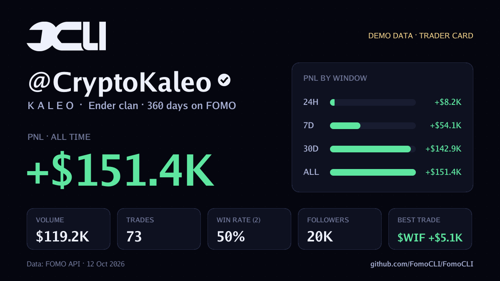

Getting started
Introduction
FomoCLI (fomocli) is a fast, single-binary command-line tool for fomo.family data. Find the traders who are up, resolve them to their real wallets, read their positions and reasoning, and watch their trades land in realtime, without opening a browser.
Traders, positions, swaps, portfolios, token flow, theses, comment threads, search.
The realtime ticker streams over a WebSocket and costs 0 credits.
Every response is cached. Replay it later with --offline.
--json everywhere, clean stdout, meaningful exit codes.
Installation
FomoCLI ships as one static binary for Linux, macOS and Windows on amd64 and arm64. Pick whichever method suits you.
Linux and macOS. Downloads the right release for your machine.
curl -fsSL https://raw.githubusercontent.com/FomoCLI/FomoCLI/main/scripts/install.sh | shRequires Go 1.23 or newer.
go install github.com/FomoCLI/FomoCLI/cmd/fomocli@latestDownload an archive for your OS and architecture from GitHub Releases, unpack it and put fomocli on your PATH.
git clone https://github.com/FomoCLI/FomoCLI
cd FomoCLI
make build
./fomoCheck it worked:
fomocli versionQuick start
- Look around first. Demo mode needs no key and no network.
fomocli --demo lb - Log in with your FOMO API key.
fomocli auth login - See who is up over the last 24 hours.
fomocli lb - Dig into a trader: wallets, PnL by window, then their positions.
fomocli trader CryptoKaleo fomocli t CryptoKaleo positions - Go live. Stream trades as they happen, or open the dashboard.
fomocli live --chain robinhood fomocli dash
Authentication
FomoCLI reads data from the FOMO API, so it needs an API key. Save it once:
fomocli auth login # prompts for the key and makes a test call
fomocli auth login --with-key - # read the key from stdin
fomocli auth status # which key is in use, and where it came from
fomocli auth logoutThe key is stored with 0600 permissions. You can also supply it per environment or per call; the order of precedence is:
--keyFOMO_API_KEYconfig file
Pass --no-verify to auth login to save a key without spending a test call.
Demo mode
Add --demo to any command to run it against built-in sample data. No key, no internet, no credits. It is the fastest way to see what a command prints before you pay for it.
fomocli --demo lb
fomocli --demo trader CryptoKaleo
fomocli --demo card CryptoKaleo
fomocli --demo dashCommands
Overview
Every command shows what it cost and what is left in a footer. Expensive calls are labeled in --help. Costs below are in API credits per call; a cached response costs 0.
Global flags
These work on every command.
| Flag | Description |
|---|---|
-j, --json | Print raw JSON (pipe into jq). Footers go to stderr. |
-o, --offline | Never touch the network; serve from the local cache. |
-f, --fresh | Skip the cache and fetch live data. |
-q, --quiet | Hide the credits/cache footer. |
--demo | Use built-in sample data (no key or internet needed). |
--key | API key, overrides FOMO_API_KEY and config. |
--base-url | API base URL. |
--no-color | Disable colors (also honors NO_COLOR). |
Market
fomocli lb [24h|7d|30d|all]250Top traders by PnL for a window (default 24h). Alias of leaderboard.
-s, --sortpnl | volume | trades | followers--verifiedonly verified traders-n, --limitrows to show (default 25, max 150)fomocli tokens [trending|most-held|graduated]250FOMO token boards with price, 24h change, market cap and holders.
-n, --limitrows to show (default 25)fomocli token <addr> [stats|devs|holders|theses]250One token, four views:
- stats (default): buy/sell flow over 5m, 1h, 4h and 24h, net flow, top-10 concentration.
- devs: deployer and insider positions, with their own thesis. A rug signal.
- holders: tracked traders holding it (smart money).
- theses: what traders wrote about it. 1,250 credits per page.
--sorttheses: likes | recent | pnl--thresholdtheses: minimum position size in USD--pagestheses: pages of history to walk (1-10, 25 per page)fomocli activity250Several traders hitting one coin at once.
--sidebuy | sell--min-tradersminimum distinct traders-n, --limitmax events (default 25, up to 100)fomocli search <query>250Traders and tokens by name.
-t, --typetraders | tokens (default both)--tokenstoken-only search endpoint-n, --limitmax resultsfomocli theses1,250The latest theses across FOMO.
-c, --chainrobinhood | solana | base | bsc | eth | arc | chain id-s, --sortrecent | equity | pnl--min-equityonly theses backed by a position of at least this many USD-n, --limitmax theses (default 20)Traders & trades
fomocli trader <handle|userId> [view], with aliases t and user.
| View | What it shows | Cost |
|---|---|---|
profile default | Wallets (Solana + EVM), PnL 24h/7d/30d/all, volume, trades, followers, avg hold, clan, account age | 2,500 |
positions | Open and closed positions: entry, exit/now, cost, realized/unrealized, win rate | 250/page |
swaps | Individual fills | 250 |
balances | Multi-chain portfolio, per-chain split, allocation bars | 250 |
following / followers | Their network, each annotated with PnL 24h, volume, trades | 250 |
spotlight | FOMO's own pick of their best trades and theses | 250 |
theses | Everything they wrote | 1,250 |
--statuspositions: open | closed
-s, --sortpositions: pnl | recent | value; following/followers: pnl | volume | followers | trades; theses: likes | recent
-a, --allpositions/swaps: walk older pages with the cursor
--pageswith --all: max pages to walk (default 4, 250 credits each)
--deeppositions: fan out across chains and sort orders (1 = full, N = N calls)
-c, --chainbalances/theses: robinhood | solana | base | bsc | eth | monad | arc | hyperliquid
fomocli t CryptoKaleo positions --status open --sort pnl
fomocli t CryptoKaleo balances --chain solana
fomocli t frankdegods following --sort pnlAlso: fomocli whois <userId> (2,500) resolves a user ID to a profile, and fomocli trade <tradeId> [comments] (250) shows one trade and its thread.
Realtime
fomocli live0A streaming ticker of the app feed over a WebSocket, with auto-reconnect. Add --onchain for the on-chain stream (Growth+): every fill, about 3.5 seconds earlier.
-t, --traderonly this trader (handle; wallet with --onchain)-c, --chainonly this chain--tokenonly this token (symbol or contract)--typebuy | sell | thesis | whale | price | trade--min-usdhide trades smaller than this many USD--bellring the terminal bell on every shown trade--notifyforward trades to telegram, discord--no-replayskip the replay of recent events on connectfomocli watch <handle>0Follow one trader live, a copy-trading view.
fomocli watch frankdegods --bell
fomocli watch frankdegods --notify discordfomocli alerts125A REST snapshot of the feed.
--typewhale | thesis | price | trade | follow | buy | sell--sinceISO timestamp-n, --limitmax alerts (default 30)fomocli dashper tabA full-screen dashboard with the leaderboard, token boards, the live feed and theses.
Alpha & sharing
fomocli radar0Swarm radar. Raises an alarm when several traders pile into the same token within minutes, or --side sell for coordinated dumps. Runs on the free live feed.
-m, --min-tradersdistinct traders needed to fire (default 3)-w, --windowhow close together the trades must be (default 10m)--sidebuy | sell | both (default buy)--min-usdignore trades smaller than this--bellring the terminal bell on every alert--notifyforward alerts to telegram, discord--offlinereplay recorded events instead of connectingfomocli scan <address>750Rug scanner. One 0-100 risk score from buy/sell flow, top-10 concentration, dev and insider exits and smart-money holders, with every reason listed.
--networknetwork id for tokens outside the directory (4663 Robinhood, 1399811149 Solana)--notifyalso send the verdict to telegram, discordfomocli card <handle>2,750Share card. A 1200×675 PNG of a trader's PnL, win rate and best trade, ready for X or Telegram.

fomocli --demo card CryptoKaleo--windowheadline PnL window: 24h | 7d | 30d | all-O, --outputoutput file (default <handle>-fomocli.png)--sendalso post the image to telegram, discord--no-positionsskip win rate and best trade (saves 250 credits)fomocli notify setup|testfreeConnect a Telegram bot or a Discord webhook. See Alerts to your phone.
Setup & tools
| Command | What it does |
|---|---|
auth login|status|logout | Manage your API key |
config list|get|set|path | Read and change settings (see Configuration) |
status [--watch] | API status, free. -w refreshes every 15 seconds |
credits | What you have spent and what is left |
cache ls|clear|path | Inspect or clear the offline cache. clear --older-than 7d |
api <path> -p key=value | Call any endpoint and print raw JSON. -p is repeatable |
completion bash|zsh|fish|powershell | Shell completion script |
version | Print the version |
Guides
Offline mode
FomoCLI saves every API response it receives. That gives you three things:
A command repeated inside the cache TTL (default 60s) is served from disk for 0 credits. Change it with config set cache_ttl 5m, skip it with --fresh.
If the network is down, FomoCLI shows the cached copy and tells you how old it is.
--offline or FOMO_OFFLINE=1 never touches the network.
fomocli lb --offline # last leaderboard you loaded
fomocli t CryptoKaleo positions --offline # last positions you loaded
fomocli live --offline -n 50 # replay the last 50 recorded live events
fomocli cache ls # everything available offlineThe first load of any view needs a connection, since the data comes from the API. After that, it is yours offline. --demo works fully offline.
Alerts to your phone
Send radar alerts, live trades, a watched trader's moves or scan verdicts to Telegram or Discord.
fomocli notify setup # how to get a Telegram bot token / Discord webhook
fomocli config set telegram_token 123456:ABC...
fomocli config set telegram_chat_id -1001234567890
fomocli notify test
fomocli radar --min-traders 4 --notify telegram # swarm alerts in your Telegram group
fomocli watch frankdegods --notify discord # one trader's every move in Discord--notify accepts telegram, discord or both, comma-separated. It works on radar, live, watch and scan. On live, pair it with --min-usd to keep the noise down.
Scripting & JSON
Every command accepts --json. Stdout stays clean JSON; the credits footer goes to stderr, so pipes just work.
# Top 10 by volume as CSV
fomocli lb 7d --json | jq -r '.traders | sort_by(-.volumeUsd)[:10][] | [.handle, .volumeUsd] | @csv'
# Every whale buy on Robinhood Chain, one JSON object per line
fomocli live --chain robinhood --min-usd 25000 --json | jq -c '{trader, token, usdValue}'
# Any endpoint, raw
fomocli api /some/path -p key=valueCredits
API calls cost credits. FomoCLI keeps you in control:
- Every command prints a footer with what it cost and what is left. Hide it with
-q. - Expensive calls are labeled in
--help. - Cache hits cost 0, and so do
live,watch,radarandstatus. fomocli creditsshows your balance at any time.
Reference
Configuration
Read and change settings with fomocli config list|get|set|path. Environment variables override the file; --key overrides both.
| Setting | Env var | Default |
|---|---|---|
api_key | FOMO_API_KEY | none |
cache_ttl | 60s | |
default_window | 24h | |
default_chain | all chains | |
theme (auto / none) | NO_COLOR | auto |
base_url | FOMO_BASE_URL | https://api.fomoapi.io |
| config dir | FOMO_CONFIG_DIR | OS config dir + /fomocli |
| cache dir | FOMO_CACHE_DIR | OS cache dir + /fomocli |
Shell completion:
source <(fomocli completion zsh) # add to ~/.zshrc
source <(fomocli completion bash) # add to ~/.bashrcExit codes
FAQ
Do I need an API key to try it?
No. fomocli --demo runs every command against built-in sample data, fully offline.
Can FomoCLI trade for me?
No. It is read-only: it never places trades or touches wallet keys.
Does it work without internet?
Anything you have loaded once is cached and can be replayed with --offline. A dropped connection falls back to the cache automatically.
How do I keep credit usage low?
Lean on the cache (raise cache_ttl), use the free streaming commands, and add --no-positions to card when you do not need win rate.
Which chains are supported?
Robinhood Chain, Solana, Base, BSC, Ethereum, Arc, Monad and Hyperliquid, depending on the command. Pass a chain name or its numeric id to --chain.
Disclaimer
FomoCLI is an independent, unofficial open-source project. It is not affiliated with, endorsed by, or sponsored by fomo.family. Nothing here is financial advice. FomoCLI is read-only: it never places trades or touches wallet keys. Released under the MIT License.